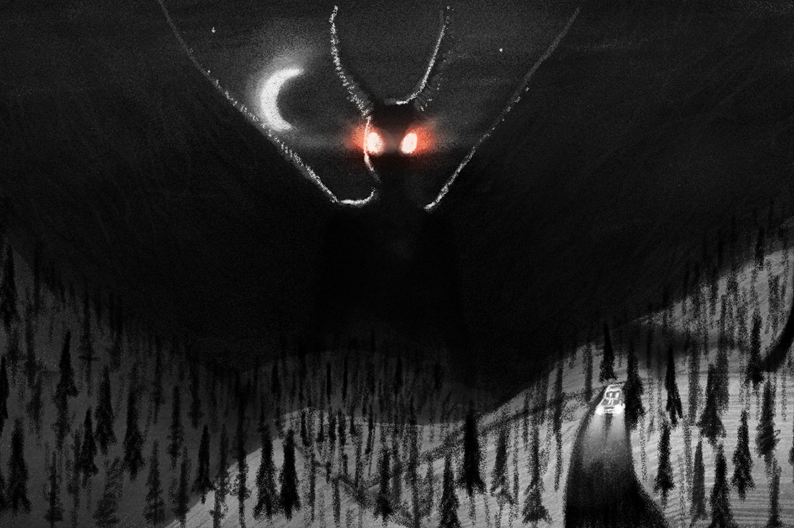
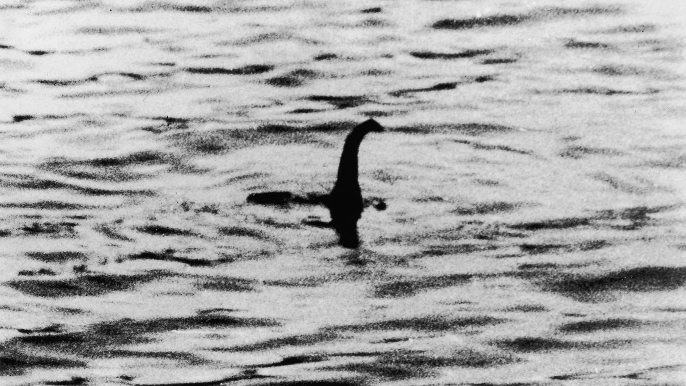

| Cryptid | Alias | Origin |
|---|---|---|
| Bigfoot | Sasquatch | Pacific Northwest |
| Mothman | Man-Sized Bird | West Virginia |
| Loch Ness Monster | Nessie | Scottish Highlands |
Bigfoot
Bigfoot, also known as Sasquatch, is one of the most iconic and mysterious cryptids in the world of cryptozoology. This enigmatic creature is said to roam the dense forests and remote wilderness areas of North America, leaving behind a trail of blurry photographs, ambiguous footprints, and countless eyewitness accounts.
Bigfoot is described as a massive, ape-like creature standing anywhere from 7 to 10 feet tall, covered in dark, shaggy fur that ranges in color from brown to black. Its enormous footprints, often measuring up to 24 inches in length, have contributed to its legendary name. Witnesses claim that Bigfoot possesses immense strength and a powerful, stocky build, making it a formidable presence in the wild.
Mothman

Mothman is a legendary and enigmatic creature that has become an enduring part of American folklore, primarily associated with the town of Point Pleasant, West Virginia. It is described as a cryptid or supernatural being that first gained widespread attention in the 1960s.
Mothman is typically described as a tall, humanoid creature standing between 6 and 7 feet tall. Its most distinctive feature is a pair of large, red, glowing eyes that are often described as being hypnotic or eerily radiant. These eyes are said to be set in its head and emit an otherworldly, unnatural light. Witnesses have reported that the eyes seemed to follow them, adding to the sense of unease.
Loch Ness Monster

The Loch Ness Monster, often affectionately referred to as "Nessie," is a legendary creature said to inhabit Loch Ness, a large freshwater lake in the Scottish Highlands. Nessie is described as a large, long-necked, and often humpbacked aquatic creature resembling a plesiosaur, a type of prehistoric marine reptile.
Reports of Nessie's size vary, but many eyewitness accounts describe it as being anywhere from 20 to 40 feet (6 to 12 meters) long. One of the defining characteristics of the Loch Ness Monster is its long neck, which is often described as having multiple humps or coils, resembling that of a serpent. Nessie is typically described as having dark or blackish skin or scales, which can make it difficult to spot in the dark waters of Loch Ness.